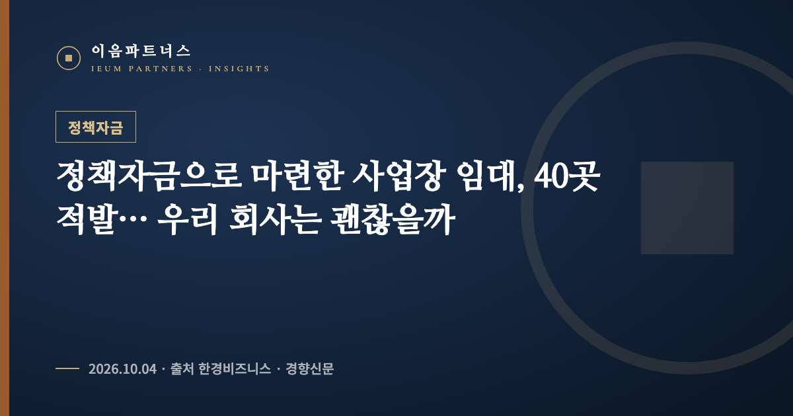

정책자금으로 마련한 사업장 임대, 40곳 적발… 우리 회사는 괜찮을까

정책자금으로 공장이나 사무실을 마련한 뒤 남는 공간을 다른 회사에 세놓으면 어떻게 될까요? 중진공의 정책자금 목적 외 사용 점검에서 2025년 한 해에만 이런 기업 40곳이 적발됐습니다. 이 글에서는 적발 내용과 2026년부터 달라진 관리 방식, 대표님이 지금 확인할 점을 정리합니다.
정책자금은 낮은 금리로 빌리는 대신 정해진 용도대로 써야 하는 돈입니다. 사업장 일부를 임대하고 있거나 임대를 고민하고 있다면, 문제가 되기 전에 대출 약정 조건부터 확인해 두는 것이 안전합니다. 우리 회사 상황이 걱정된다면 카카오톡 채널 이음파트너스에서 함께 점검해 볼 수 있습니다.
무엇이 적발됐나
국회 산업통상자원중소벤처기업위원회 소속 의원이 중소벤처기업부와 중진공에서 받은 자료에 따르면, 적발된 업체들은 중진공에서 각각 10억~60억 원을 빌려 사업장을 마련한 뒤 그 공간을 다른 업체에 임대하고 월세를 받았습니다(한경비즈니스).
| 구분 | 내용 |
|---|---|
| 2025년 적발 | 부동산 임대에 쓴 40개 기업 |
| 지원 총액 | 872억 5천만 원 |
| 기업당 대출 | 10억~60억 원 |
| 적발 추이 | 2023년 1건 → 2024년 26건 → 2025년 40건 |
| 중복 혜택 | 적발 기업 가운데 25곳은 중기부의 다른 지원사업 혜택도 받음 |
한 업체는 중진공에서 11억 9천만 원을 지원받은 데 이어 스마트공장 구축사업, 기술보증, 정책자금 등의 명목으로 33억 5천만 원을 더 받았지만 그 자금으로 임대사업을 벌였습니다. 자료를 공개한 의원은 “중기부 지원 사업에 대한 사후 관리가 제대로 이뤄지지 않고 있다”고 지적했습니다(한경비즈니스).
2026년부터 무엇이 달라졌나
중소벤처기업부는 2026년 정책자금 운용계획에서 목적 외 사용이 확인되면 정책자금 융자 신청을 제한하는 ‘원스트라이크 아웃제’를 도입하겠다고 밝혔습니다. 부실 징후를 상시 살피는 조기경보시스템도 강화하고, 정책자금에 제3자가 부당하게 끼어드는 것을 막는 법제화 방안도 마련하기로 했습니다(경향신문).
한 번 걸리면 앞으로 정책자금을 쓰기 어려워질 수 있다는 뜻입니다. 신청은 회사가 직접 하고, 지원 여부와 금액은 각 기관 심사로 정해집니다. 자금을 받은 뒤의 사용 내역도 점검 대상이 된다는 점을 기억해 두시길 권합니다.
대표님이 지금 확인할 것
- 정책자금(특히 시설자금)으로 마련한 공장·사무실 가운데 다른 회사에 빌려준 공간이 있는지
- 대출 약정서에 적힌 자금 용도와 사후 관리 조건을 다시 읽어 보았는지
- 남는 공간을 활용해야 한다면, 미리 관할 중진공 지역본·지부에 가능한지 문의했는지
- 새로 신청할 정책자금의 신청 용도와 실제 사용 계획이 일치하는지
참고한 자료
- “나랏 돈으로 땅 장사” 중기부 정책자금 유용 적발 — 한경비즈니스 (2026.10.04)
- 새해 ‘중기 정책자금’ 4조4300억원···7년 미만 창업기업에 1조6천억 — 경향신문 (2025.12.22)
정책자금 사후 관리가 걱정되거나 지금 쓰는 방식이 괜찮은지 확인하고 싶다면 카카오톡 채널 이음파트너스로 편하게 물어봐 주세요.
※ 이 글은 일반적인 정보 제공을 위한 것으로, 개별 사안은 세무사·노무사 등 전문가와 함께 확인하시기 바랍니다.